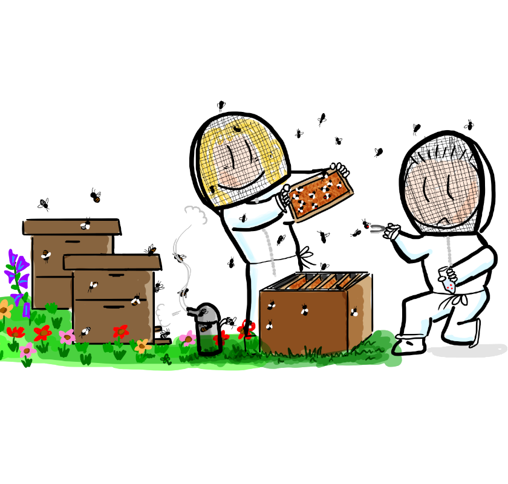
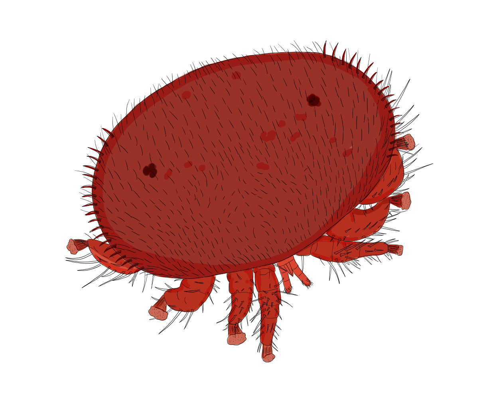

Varroa mites observation atlas
Find Varroa records and mitochondrial lineages worldwide.


Latest evidence
All papers ↗Loading…
Latest NCBI records
All NCBI records ↗Snapshot · 2 October 2021
Loading…
Find Varroa records and mitochondrial lineages worldwide.


Snapshot · 2 October 2021